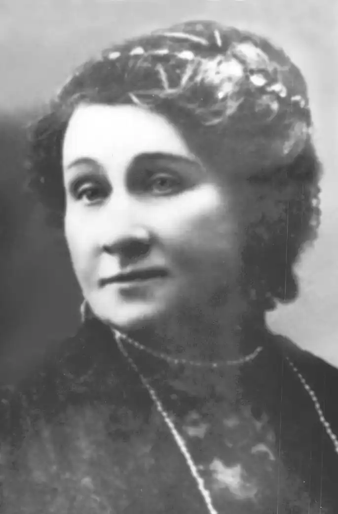
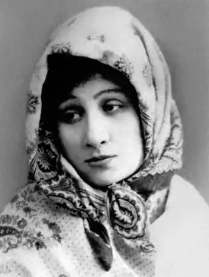

Заньковецька Марія Костянтинівна
(1854-1934)
актриса, громадська діячка Народилася Марія Костянтинівна Заньковецька (справжнє прізвище — Адасовська) 22 липня 1854 року в селі Заньки Ніжинського повіту Чернігівської губернії. Вона була п’ятою дитиною в сім’ї збіднілих поміщиків Адасовських. З десяти років Марія почала навчання у приватному пансіоні Осовської в Чернігові. На той час програма цього закладу відзначалася досить серйозним рівнем викладання широкого спектра дисциплін. Дівчинка з великим задоволенням поринула у світ знань, але більше за все любила імпровізувати зі своїми подругами на уроках танців, занять пантомімою. Дівчатка самі собі ставили невеличкі п’єси, різні етюди і з великим задоволенням їх виконували. Сім’я Адасовських відзначалася гостинністю. У них завжди збиралося багато молоді, приїжджали студенти — товариші братів по навчанню. Батько Марії Костянтин Костянтинович мав чудовий голос, соковитий баритон, а Марія — сильне меццо-сопрано. Удвох вони часто влаштовували для гостей сімейні концерти. На великі храмові свята батько запрошував до себе студентів з Ніжина. Збірним хором вони розучували концертні номери, особливу увагу приділяли творам духовної музики. Справжнім потрясінням для селян ставали ті виступи, коли хор під орудою К.Адасовського розпочинав спів на церковному криласі. Краса і гармонія голосів, поєднуючись з урочистістю літургії, викликала сльози замилування і благоговіння. Коли дівчинці виповнилося шістнадцять років, постало питання про подальше серйозне навчання. Марія прагнула вступити до консерваторії, аби професійно вчитися співу. Але батьки й слухати не хотіли про майбутню кар’єру дочки як співачки. Звісно, вони не могли не помічати артистичних здібностей своєї доньки, не могли не бачити, що їй уже замало церковного співу та аматорських вистав. Марія росла жвавою веселою дівчиною. Всю домашню роботу вона могла виконувати без сторонньої допомоги, а згодом багато чого навчилася і у батьковому польовому господарстві. За щиру вдачу, добре серце панську дочку любили в селі. Вона ж відповідала своїм землякам взаємністю. Здається, не було жодної господи в Заньках, куди б вона не заходила або ж з якоюсь допомогою, або ж просто від бажання поспілкуватися, ближче дізнатися про болі і радощі життя хліборобів. Так у її свідомість входили образи майбутніх героїнь, засновуючись на проникливому співчутті, на чистих почуттях і відчуттях, на безмежному багатстві народної творчості, виплеснутому у піснях, переказах, легендах, повір’ях. Поривання вродливої дівчини до артистичного світу відзначив свого часу і молодий офіцер Хлистов, який бачив її на ніжинських виставах. Наобіцявши підтримки й допомоги, він домігся руки юної красуні. Так у сімнадцять років вона стала дружиною артилерійського офіцера й опинилася в Бессарабії, у фортеці Бендери. У цей час відбувається її зустріч з Миколою Тобілевичем, яка різко змінила її життя. Згодом чоловіка перевели служити в Свеаборг, і у Марії Костянтинівни з’явилася можливість їздити до Гельсінгфорса і брати уроки співу в місцевому відділенні Петербурзької консерваторії, у професора Гржималі. Всі захоплювалися її чудовим голосом, але, на нещастя, уже у першій рік праці на сцені вона захворіла в Харкові на дифтерит, після якого тембр колись такого сильного меццо-сопрано значно змінився на гірше. Порятунком лишалася сцена. Через деякий час саме ця найсильніша пристрасть її життя змусила порвати з сім’єю і всю себе присвятити сцені. 27 жовтня 1882 року відбувся її сценічний дебют в Єлисаветграді (нині Кіровоград), де вона виконувала роль Наталки Полтавки у першому українському професійному театрі під керівництвом М.Кропивницького. Ця вистава стала для неї хрещенням у нелегкій, але подвижницькій і видатній своїй долі в історії українського театрального мистецтва. Пізніше М.Заньковецька (вона взяла цей псевдонім на згадку про минуле і щасливе дитинство в улюблених Заньках) працює в найпопулярніших і найпрофесійніших українських трупах М.Кропивницького, М.Старицького, М.Садовського, П.Саксаганського, І.Карпенка-Карого. Мистецтво М.Заньковецької мало життєву силу, оскільки живилося народною любов’ю, глибоким розумінням найсокровенніших мрій і прагнень. Вона уславляла своєю грою звичайних простих людей, розкриваючи безмежність їхніх душ. Актриса надзвичайно широкого творчого діапазону, М.Заньковецька створювала образи, проникнуті справжнім драматизмом і запальною комедійністю: Христина, Софія ("Наймичка", 1986, "Безталанна", 1887, Карпенка-Карого), Оксана, Олена, Зінька ("Поки сонце зійде, роса очі виїсть", 1882, "Глитай, або ж Павук", 1883, "Дві сім’ї", 1894, Кропивницького), Наталка ("Лимерівна" Панаса Мирного, 1982), Катря, Аза, Цвіркунка ("Не судьба", 1889, "Циганка Аза", 1892, "Чорноморці", 1882, Старицького), Галя ("Назар Стодоля", 1882, Шевченка), Наталка, Терпелиха ("Наталка Полтавка", 1882, 1912, Котляревського) та ін. Сценічне мистецтво М.Заньковецької відзначалося щирістю переживань, глибоким проникненням у суть образу, високим рівнем майстерності, художньою переконливістю. Її творчість мала велике значення для формування національного театрального мистецтва, розвитку драматургії, створення школи сценічної майстерності для наступних поколінь українських митців. Після революції М.Заньковецька брала активну участь у становленні нового українського театру. Вона очолювала Народний театр у Ніжині. Разом з Саксаганським організувала Народний театр у Києві, на базі якого у 1922 році було створено Театр ім.Заньковецької (тепер Львівський український драматичний театр ім.М.Заньковецької). Їй першій в Україні присвоєно звання народної артистки республіки. Померла велика артистка 4 жовтня 1934 року в Києві. Відомо, що талант майбутньої актриси проявився ще з ранніх літ. Вона з особливим задоволенням брала участь в усяких забавах, витівках, інколи навіть ризикуючи потрапити під невдоволення батьків, яких вона дуже любила і намагалася їх ніколи не сердити, не завдавати їм жалю. Але прагнення емоційно відкривати нові грані своєї натури спонукало дівчинку на все нові й нові творчі експерименти, художні імпровізації, найрізноманітніші вигадки. Марія Старицька у своїх спогадах про М.К.Заньковецьку згадувала: "Батько Марії Костянтинівни був суддею і у своїх справах часто приїздила до нього літня поміщиця, яка затіяла нескінченний позов зі своїми дітьми. Це був справді гоголівський тип, щось подібне до Коробочки. "Ро-зо-ря-ють, ро-зо-ря-ють", — повторювала вона безупинно, перериваючи свої мову схлипуваннями, охами і слізьми. Весела, дотепна Марія Костянтинівна задумала підманути свого батька. Вона зладнала собі допотопний костюм, що нагадував костюм Коробочки. Насурмила брови, напудрила волосся, нап’яла на голову капелюшок, завісила обличчя вуаллю і з’явилася перед батьком. "Ро-зо-ря-ють, ро-зо-ря-ють", — почули батьки із сусідньої кімнати знайомий голос усім набридлої поміщиці. Потім полилися охи і нарікання на дітей. Молода дівчина так скопіювала стару, що навіть батько спочатку не пізнав її і, зворушений її зойками, зауважив: "Так, я бачу, що діти завдають вам багато неприємностей, ви навіть схудли за цей час". І тільки коли Маня весело розреготалася, усі зрозуміли, що то за "поміщиця". Це прагнення до постійного виявлення свого "я", пошук справжніх дебютів самоствердження не полишали Марію ніколи. Яскравим підтвердженням тому став відомий епізод з життя молодого подружжя Хлистових. Одружившись з Марією Костянтинівною, Хлистов, який раніше в усьому підтримував поривання юної красуні до освіти, до сцени, тепер безапеляційно заявляв, що призначення жінки — бути доброю дружиною, матір’ю. Глибоким розчаруванням стали наповнюватися вже перші місяці їхнього спільного життя. Єдиною розрадою і втіхою був аматорський гурток фортеці Бендери. Тут Марія вперше зустріла піхотного офіцера Миколу Карповича Тобілевича, який згодом став одним з найвидатніших українських акторів, виступаючи під псевдонімом Садовський. Зустріч ця, як виявилося, мала фатальний характер для обох людей. Після одного особливо вдалого спектаклю Марія Костянтинівна запросила акторів-аматорів до себе на чай. Господиня почувалася в той вечір особливо піднесено: жартувала, читала вірші, співала. Звісно, всі були в захваті від такого іскрометного таланту молодої жінки. Тобілевич переконував її, що вона чинить злочин, не пробуючи вступити на навчання до консерваторії, запевняв, що її справжнє покликання — сцена. А та, спохмурнівши, відповідала, що її призначення — домашнє господарство. Тут і нагодився Хлистов. Гості пробували його вмовити відпустити дружину на серйозну науку. Той мусив погоджуватися, аби не видатися ретроградом і не псувати стосунки з такою кількістю людей. Але він зробив одне, як йому видавалося, надзвичайно хитромудре застереження. Він сказав, що піде на це з однією умовою: його дружина виступатиме не на російській, а на українській сцені, якщо така колись створиться. Мотивування своєму рішенню він знаходив у надзвичайно сильному українському акценті Марії Костянтинівни. Звісно, це було ширмою для справжніх розрахунків чоловіка. Він чудово розумів, що українська сцена завжди перебуватиме під забороною, і його дружина ніколи нікуди від нього не дінеться. Присутні ж зустріли таке побажання господаря дому весело й захоплено. Вони вимагали у нього розписку про своє рішення — законну, з печаткою. Хтось знайшов папір, сургуч, принесли чорнило, перо, і Хлистов, оточений збудженою публікою, змушений був виконувати свою обіцянку. Тобілевич урочисто згорнув папір, де писалося, що він, Хлистов, не заперечуватиме виступати на українській сцені своїй дружині, якщо дозволено буде самі вистави. Була якась особлива символіка у цьому епізоді, вона виразно пронизувала сутність як особистого життя Марії Костянтинівни, так і долю українського театру загалом. ** …Я побачив Вас вперше в російській п’єсі (в "Лісі") і мало не збожеволів від захоплення. Такого виконання я ще не бачив, хоча, як рецензентові однієї з південних газет, мені доводилося бачити багато талановитих знаменитостей… Кілька друкованих рядків, присвячених вам в одній з київських газет, здавалися мені краплею в морі, і я не міг зрозуміти тих, хто намагався переконати мене, що я перебільшив, що я сказав дуже багато, що у російських п’єсах Ви нібито слабіші, ніж у малоросійських! Брехня! Для таланту немає меж, немає мови, немає становища, яке б він не подолав. /**І.Висоцький.**/